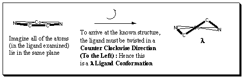

F. Metal Tris Chelates with Non-Planar Ligands that can have λ or δ Ligand Conformations
1. What is a λ or a δ Ligand Conformation? a. λ
One isomer of the Co(H2NCH2CH2NH2)33+ ion is shown to your left. More Info / Ref
Potentially useful viewing commands:
Metal Tris Chelates with Non-Planar Ligand Rings can have twists in the 3D-structure of the ligands that give rise to additional stereochemistry.
These twists give rise to λ or δ twist ligand conformations. The conformations are defined relative to the plane consisting of the coordinating atom-metal-coordinating atom plane (in our example, the N-M-N plane that can be highlighed in magneta) for that particular ligand.
What we are looking for is a twist in one of two directions as shown in the schematic below:

To assign the ligand conformation, we need to look down the C2 axis:
Why is it called a λ conformation?

Remember that Lambda is associated with Left
and Leftwise Rotations = Counter Clockwise
The δ ligand conformation is illustrated on the next page